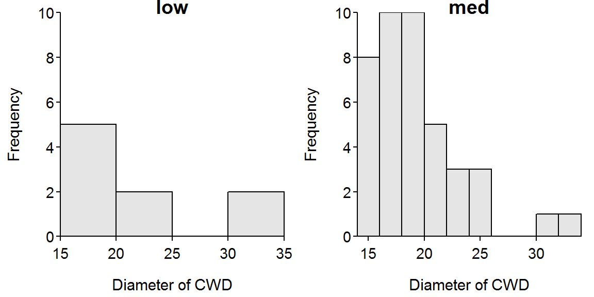

Class Excercise 4
- The diameter of CWD is largely right-skewed with a separate group of 4 individuals at higher diameters (Figure 1). With this definition of shape, there are no outliers. The center as measured by the median is 18 cm and the IQR is from a Q1 of 16.25 to a Q3 of 20.75 cm. I chose to use the median and IQR because of the right-skewed shape.
- The diameter of CWD is largely right-skewed for both low- and medium-exposure sites (Figure 2). There are no obvious outliers. [Note that it is difficult to describe shape and outliers in this case because the sample sizes in the two groups are so small.] The medians are 19 and 18, respectively, for the low- and medium-exposure sites. The IQR is from a Q1 of 16 to a Q3 of 24 for the low-exposure sites and from a Q1 of 17 to a Q3 of 20 for the medium-exposure sites. The median and IQR were used because of the skewed shape for both distributions.
> d <- read.csv("cwd.csv")
> str(d)'data.frame': 50 obs. of 2 variables:
$ diameter: int 21 15 18 23 18 17 19 17 15 22 ...
$ exposure: Factor w/ 2 levels "low","med": 2 2 2 1 2 1 2 2 2 2 ...> hist(~diameter,data=d,xlab="Diameter of CWD")
> Summarize(~diameter,data=d,digits=2) n nvalid mean sd min Q1 median Q3 max percZero
50.00 50.00 19.54 4.94 15.00 16.25 18.00 20.75 34.00 0.00 > hist(diameter~exposure,data=d,xlab="Diameter of CWD")
> Summarize(diameter~exposure,data=d,digits=2) exposure n nvalid mean sd min Q1 median Q3 max percZero
1 low 9 9 22.11 7.37 16 16 19 24 34 0
2 med 41 41 18.98 4.15 15 17 18 20 34 0